2.5 - Autoencoders#
!wget -nc --no-cache -O init.py -q https://raw.githubusercontent.com/rramosp/2021.deeplearning/main/content/init.py
import init; init.init(force_download=False);
import numpy as np
import matplotlib.pyplot as plt
import pandas as pd
%matplotlib inline
1. Introduction#
An autoencoder is an unsupervised lerarning method in which we seek to obtain a LATENT REPRESENTATION of our data, usually with reduced dimensionality.
We will be using
Tensorflow. Since TF can use GPUs or TPUs if available, it is usually better to force all data types to be
np.float32orint.The MNIST digits classification dataset. Observe how we normalize the MNIST images.
mnist = pd.read_csv("local/data/mnist1.5k.csv.gz", compression="gzip", header=None).values
X=(mnist[:,1:785]/255.).astype(np.float32)
y=(mnist[:,0]).astype(int)
print("dimension de las imagenes y las clases", X.shape, y.shape)
dimension de las imagenes y las clases (1500, 784) (1500,)
perm = np.random.permutation(list(range(X.shape[0])))[0:50]
random_imgs = X[perm]
random_labels = y[perm]
fig = plt.figure(figsize=(10,6))
for i in range(random_imgs.shape[0]):
ax=fig.add_subplot(5,10,i+1)
plt.imshow(random_imgs[i].reshape(28,28), interpolation="nearest", cmap = plt.cm.Greys_r)
ax.set_title(int(random_labels[i]))
ax.set_xticklabels([])
ax.set_yticklabels([])
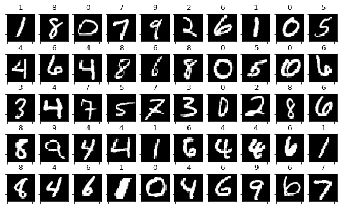
and we do the regular train/test split
from sklearn.model_selection import train_test_split
X_train, X_test, y_train, y_test = train_test_split(X, y, test_size=.2)
2. Assembling and training an autoencoder#
Observe how an autoencoder is just a concatenation of two regular Dense layers. Why are we using a sigmoid as decoder output activation?
from tensorflow.keras import Model
from tensorflow.keras.layers import Dense, Dropout, Flatten, Input
import tensorflow as tf
def get_model(input_dim, code_size):
inputs = Input(shape=(input_dim,), name="input")
encoder = Dense(code_size, activation='relu', dtype=np.float32, name="encoder")(inputs)
outputs = Dense(input_dim, activation='sigmoid', dtype=np.float32, name="decoder")(encoder)
model = Model([inputs], [outputs])
model.compile(optimizer='adam', loss='mse')
return model
model = get_model(input_dim=X.shape[1], code_size=50)
model.summary()
Model: "functional_11"
┏━━━━━━━━━━━━━━━━━━━━━━━━━━━━━━━━━┳━━━━━━━━━━━━━━━━━━━━━━━━┳━━━━━━━━━━━━━━━┓ ┃ Layer (type) ┃ Output Shape ┃ Param # ┃ ┡━━━━━━━━━━━━━━━━━━━━━━━━━━━━━━━━━╇━━━━━━━━━━━━━━━━━━━━━━━━╇━━━━━━━━━━━━━━━┩ │ input (InputLayer) │ (None, 784) │ 0 │ ├─────────────────────────────────┼────────────────────────┼───────────────┤ │ encoder (Dense) │ (None, 50) │ 39,250 │ ├─────────────────────────────────┼────────────────────────┼───────────────┤ │ decoder (Dense) │ (None, 784) │ 39,984 │ └─────────────────────────────────┴────────────────────────┴───────────────┘
Total params: 79,234 (309.51 KB)
Trainable params: 79,234 (309.51 KB)
Non-trainable params: 0 (0.00 B)
and we simply train the autoencoder. Observe how we use the same data as input and output
model.fit(X_train, X_train, epochs=100, batch_size=16)
Epoch 1/100
75/75 ━━━━━━━━━━━━━━━━━━━━ 2s 2ms/step - loss: 0.1487
Epoch 2/100
75/75 ━━━━━━━━━━━━━━━━━━━━ 0s 2ms/step - loss: 0.0644
Epoch 3/100
75/75 ━━━━━━━━━━━━━━━━━━━━ 0s 3ms/step - loss: 0.0520
Epoch 4/100
75/75 ━━━━━━━━━━━━━━━━━━━━ 0s 2ms/step - loss: 0.0429
Epoch 5/100
75/75 ━━━━━━━━━━━━━━━━━━━━ 0s 2ms/step - loss: 0.0384
Epoch 6/100
75/75 ━━━━━━━━━━━━━━━━━━━━ 0s 2ms/step - loss: 0.0351
Epoch 7/100
75/75 ━━━━━━━━━━━━━━━━━━━━ 0s 2ms/step - loss: 0.0320
Epoch 8/100
75/75 ━━━━━━━━━━━━━━━━━━━━ 0s 2ms/step - loss: 0.0298
Epoch 9/100
75/75 ━━━━━━━━━━━━━━━━━━━━ 0s 2ms/step - loss: 0.0277
Epoch 10/100
75/75 ━━━━━━━━━━━━━━━━━━━━ 0s 2ms/step - loss: 0.0255
Epoch 11/100
75/75 ━━━━━━━━━━━━━━━━━━━━ 0s 2ms/step - loss: 0.0238
Epoch 12/100
75/75 ━━━━━━━━━━━━━━━━━━━━ 0s 2ms/step - loss: 0.0220
Epoch 13/100
75/75 ━━━━━━━━━━━━━━━━━━━━ 0s 2ms/step - loss: 0.0209
Epoch 14/100
75/75 ━━━━━━━━━━━━━━━━━━━━ 0s 2ms/step - loss: 0.0195
Epoch 15/100
75/75 ━━━━━━━━━━━━━━━━━━━━ 0s 2ms/step - loss: 0.0189
Epoch 16/100
75/75 ━━━━━━━━━━━━━━━━━━━━ 0s 3ms/step - loss: 0.0175
Epoch 17/100
75/75 ━━━━━━━━━━━━━━━━━━━━ 0s 2ms/step - loss: 0.0165
Epoch 18/100
75/75 ━━━━━━━━━━━━━━━━━━━━ 0s 2ms/step - loss: 0.0159
Epoch 19/100
75/75 ━━━━━━━━━━━━━━━━━━━━ 0s 2ms/step - loss: 0.0152
Epoch 20/100
75/75 ━━━━━━━━━━━━━━━━━━━━ 0s 2ms/step - loss: 0.0144
Epoch 21/100
75/75 ━━━━━━━━━━━━━━━━━━━━ 0s 3ms/step - loss: 0.0139
Epoch 22/100
75/75 ━━━━━━━━━━━━━━━━━━━━ 0s 3ms/step - loss: 0.0131
Epoch 23/100
75/75 ━━━━━━━━━━━━━━━━━━━━ 0s 2ms/step - loss: 0.0128
Epoch 24/100
75/75 ━━━━━━━━━━━━━━━━━━━━ 0s 2ms/step - loss: 0.0126
Epoch 25/100
75/75 ━━━━━━━━━━━━━━━━━━━━ 0s 2ms/step - loss: 0.0118
Epoch 26/100
75/75 ━━━━━━━━━━━━━━━━━━━━ 0s 2ms/step - loss: 0.0115
Epoch 27/100
75/75 ━━━━━━━━━━━━━━━━━━━━ 0s 2ms/step - loss: 0.0110
Epoch 28/100
75/75 ━━━━━━━━━━━━━━━━━━━━ 0s 2ms/step - loss: 0.0106
Epoch 29/100
75/75 ━━━━━━━━━━━━━━━━━━━━ 0s 2ms/step - loss: 0.0104
Epoch 30/100
75/75 ━━━━━━━━━━━━━━━━━━━━ 0s 2ms/step - loss: 0.0101
Epoch 31/100
75/75 ━━━━━━━━━━━━━━━━━━━━ 0s 2ms/step - loss: 0.0096
Epoch 32/100
75/75 ━━━━━━━━━━━━━━━━━━━━ 0s 2ms/step - loss: 0.0094
Epoch 33/100
75/75 ━━━━━━━━━━━━━━━━━━━━ 0s 2ms/step - loss: 0.0093
Epoch 34/100
75/75 ━━━━━━━━━━━━━━━━━━━━ 0s 2ms/step - loss: 0.0090
Epoch 35/100
75/75 ━━━━━━━━━━━━━━━━━━━━ 0s 2ms/step - loss: 0.0086
Epoch 36/100
75/75 ━━━━━━━━━━━━━━━━━━━━ 0s 2ms/step - loss: 0.0087
Epoch 37/100
75/75 ━━━━━━━━━━━━━━━━━━━━ 0s 2ms/step - loss: 0.0082
Epoch 38/100
75/75 ━━━━━━━━━━━━━━━━━━━━ 0s 2ms/step - loss: 0.0082
Epoch 39/100
75/75 ━━━━━━━━━━━━━━━━━━━━ 0s 2ms/step - loss: 0.0079
Epoch 40/100
75/75 ━━━━━━━━━━━━━━━━━━━━ 0s 2ms/step - loss: 0.0079
Epoch 41/100
75/75 ━━━━━━━━━━━━━━━━━━━━ 0s 3ms/step - loss: 0.0076
Epoch 42/100
75/75 ━━━━━━━━━━━━━━━━━━━━ 0s 4ms/step - loss: 0.0074
Epoch 43/100
75/75 ━━━━━━━━━━━━━━━━━━━━ 0s 3ms/step - loss: 0.0071
Epoch 44/100
75/75 ━━━━━━━━━━━━━━━━━━━━ 0s 3ms/step - loss: 0.0073
Epoch 45/100
75/75 ━━━━━━━━━━━━━━━━━━━━ 0s 3ms/step - loss: 0.0070
Epoch 46/100
75/75 ━━━━━━━━━━━━━━━━━━━━ 0s 4ms/step - loss: 0.0069
Epoch 47/100
75/75 ━━━━━━━━━━━━━━━━━━━━ 0s 3ms/step - loss: 0.0067
Epoch 48/100
75/75 ━━━━━━━━━━━━━━━━━━━━ 0s 4ms/step - loss: 0.0066
Epoch 49/100
75/75 ━━━━━━━━━━━━━━━━━━━━ 1s 2ms/step - loss: 0.0066
Epoch 50/100
75/75 ━━━━━━━━━━━━━━━━━━━━ 0s 2ms/step - loss: 0.0065
Epoch 51/100
75/75 ━━━━━━━━━━━━━━━━━━━━ 0s 2ms/step - loss: 0.0064
Epoch 52/100
75/75 ━━━━━━━━━━━━━━━━━━━━ 0s 3ms/step - loss: 0.0062
Epoch 53/100
75/75 ━━━━━━━━━━━━━━━━━━━━ 0s 2ms/step - loss: 0.0062
Epoch 54/100
75/75 ━━━━━━━━━━━━━━━━━━━━ 0s 2ms/step - loss: 0.0061
Epoch 55/100
75/75 ━━━━━━━━━━━━━━━━━━━━ 0s 2ms/step - loss: 0.0060
Epoch 56/100
75/75 ━━━━━━━━━━━━━━━━━━━━ 0s 2ms/step - loss: 0.0058
Epoch 57/100
75/75 ━━━━━━━━━━━━━━━━━━━━ 0s 2ms/step - loss: 0.0059
Epoch 58/100
75/75 ━━━━━━━━━━━━━━━━━━━━ 0s 2ms/step - loss: 0.0056
Epoch 59/100
75/75 ━━━━━━━━━━━━━━━━━━━━ 0s 2ms/step - loss: 0.0057
Epoch 60/100
75/75 ━━━━━━━━━━━━━━━━━━━━ 0s 2ms/step - loss: 0.0057
Epoch 61/100
75/75 ━━━━━━━━━━━━━━━━━━━━ 0s 2ms/step - loss: 0.0054
Epoch 62/100
75/75 ━━━━━━━━━━━━━━━━━━━━ 0s 2ms/step - loss: 0.0056
Epoch 63/100
75/75 ━━━━━━━━━━━━━━━━━━━━ 0s 2ms/step - loss: 0.0055
Epoch 64/100
75/75 ━━━━━━━━━━━━━━━━━━━━ 0s 2ms/step - loss: 0.0054
Epoch 65/100
75/75 ━━━━━━━━━━━━━━━━━━━━ 0s 3ms/step - loss: 0.0054
Epoch 66/100
75/75 ━━━━━━━━━━━━━━━━━━━━ 0s 2ms/step - loss: 0.0053
Epoch 67/100
75/75 ━━━━━━━━━━━━━━━━━━━━ 0s 2ms/step - loss: 0.0052
Epoch 68/100
75/75 ━━━━━━━━━━━━━━━━━━━━ 0s 2ms/step - loss: 0.0053
Epoch 69/100
75/75 ━━━━━━━━━━━━━━━━━━━━ 0s 2ms/step - loss: 0.0051
Epoch 70/100
75/75 ━━━━━━━━━━━━━━━━━━━━ 0s 2ms/step - loss: 0.0050
Epoch 71/100
75/75 ━━━━━━━━━━━━━━━━━━━━ 0s 2ms/step - loss: 0.0051
Epoch 72/100
75/75 ━━━━━━━━━━━━━━━━━━━━ 0s 2ms/step - loss: 0.0050
Epoch 73/100
75/75 ━━━━━━━━━━━━━━━━━━━━ 0s 2ms/step - loss: 0.0050
Epoch 74/100
75/75 ━━━━━━━━━━━━━━━━━━━━ 0s 3ms/step - loss: 0.0050
Epoch 75/100
75/75 ━━━━━━━━━━━━━━━━━━━━ 0s 2ms/step - loss: 0.0050
Epoch 76/100
75/75 ━━━━━━━━━━━━━━━━━━━━ 0s 2ms/step - loss: 0.0048
Epoch 77/100
75/75 ━━━━━━━━━━━━━━━━━━━━ 0s 2ms/step - loss: 0.0049
Epoch 78/100
75/75 ━━━━━━━━━━━━━━━━━━━━ 0s 2ms/step - loss: 0.0048
Epoch 79/100
75/75 ━━━━━━━━━━━━━━━━━━━━ 0s 2ms/step - loss: 0.0049
Epoch 80/100
75/75 ━━━━━━━━━━━━━━━━━━━━ 0s 2ms/step - loss: 0.0047
Epoch 81/100
75/75 ━━━━━━━━━━━━━━━━━━━━ 0s 2ms/step - loss: 0.0047
Epoch 82/100
75/75 ━━━━━━━━━━━━━━━━━━━━ 0s 2ms/step - loss: 0.0047
Epoch 83/100
75/75 ━━━━━━━━━━━━━━━━━━━━ 0s 2ms/step - loss: 0.0046
Epoch 84/100
75/75 ━━━━━━━━━━━━━━━━━━━━ 0s 2ms/step - loss: 0.0045
Epoch 85/100
75/75 ━━━━━━━━━━━━━━━━━━━━ 0s 2ms/step - loss: 0.0047
Epoch 86/100
75/75 ━━━━━━━━━━━━━━━━━━━━ 0s 2ms/step - loss: 0.0046
Epoch 87/100
75/75 ━━━━━━━━━━━━━━━━━━━━ 0s 2ms/step - loss: 0.0046
Epoch 88/100
75/75 ━━━━━━━━━━━━━━━━━━━━ 0s 2ms/step - loss: 0.0045
Epoch 89/100
75/75 ━━━━━━━━━━━━━━━━━━━━ 0s 3ms/step - loss: 0.0045
Epoch 90/100
75/75 ━━━━━━━━━━━━━━━━━━━━ 0s 4ms/step - loss: 0.0044
Epoch 91/100
75/75 ━━━━━━━━━━━━━━━━━━━━ 0s 3ms/step - loss: 0.0044
Epoch 92/100
75/75 ━━━━━━━━━━━━━━━━━━━━ 0s 4ms/step - loss: 0.0044
Epoch 93/100
75/75 ━━━━━━━━━━━━━━━━━━━━ 0s 4ms/step - loss: 0.0044
Epoch 94/100
75/75 ━━━━━━━━━━━━━━━━━━━━ 0s 4ms/step - loss: 0.0043
Epoch 95/100
75/75 ━━━━━━━━━━━━━━━━━━━━ 1s 3ms/step - loss: 0.0044
Epoch 96/100
75/75 ━━━━━━━━━━━━━━━━━━━━ 0s 2ms/step - loss: 0.0043
Epoch 97/100
75/75 ━━━━━━━━━━━━━━━━━━━━ 0s 2ms/step - loss: 0.0043
Epoch 98/100
75/75 ━━━━━━━━━━━━━━━━━━━━ 0s 2ms/step - loss: 0.0043
Epoch 99/100
75/75 ━━━━━━━━━━━━━━━━━━━━ 0s 2ms/step - loss: 0.0042
Epoch 100/100
75/75 ━━━━━━━━━━━━━━━━━━━━ 0s 2ms/step - loss: 0.0042
<keras.src.callbacks.history.History at 0x785c0b33a090>
The training seems to have gone well (the loss was reduced)
Question: How can we measure how good was the result?
You can try with larger layers, with more layers, etc.
Making predictions#
We can feed the model any input and get the output. Observe we get eager tensors, which are like a symbolic wrapper to numpy matrices. We will see more about this later in this course.
o = model(X_train)
o
/usr/local/lib/python3.12/dist-packages/keras/src/models/functional.py:241: UserWarning: The structure of `inputs` doesn't match the expected structure.
Expected: ['input']
Received: inputs=Tensor(shape=(1200, 784))
warnings.warn(msg)
<tf.Tensor: shape=(1200, 784), dtype=float32, numpy=
array([[3.50094751e-07, 1.94241650e-07, 8.59628955e-08, ...,
2.07136850e-07, 8.43215844e-07, 5.10688835e-07],
[3.22270943e-09, 3.45581626e-08, 5.86148352e-10, ...,
1.50969122e-08, 4.10425693e-09, 1.37500294e-07],
[1.91462179e-09, 1.35006601e-08, 2.12271578e-09, ...,
7.72400988e-09, 3.95893807e-09, 1.30482780e-08],
...,
[7.66471749e-06, 9.76466936e-07, 4.00476938e-06, ...,
1.87887999e-05, 8.49053686e-06, 1.12413509e-04],
[1.16530943e-11, 8.82327024e-12, 2.29403063e-12, ...,
7.90878613e-11, 2.99862457e-12, 1.16109684e-10],
[2.22401306e-10, 7.32814753e-10, 7.91984620e-12, ...,
1.50693361e-10, 9.12313627e-11, 4.35173043e-11]], dtype=float32)>
in eager tensors we can access the underlying numpy matrix.
o.numpy()
array([[3.50094751e-07, 1.94241650e-07, 8.59628955e-08, ...,
2.07136850e-07, 8.43215844e-07, 5.10688835e-07],
[3.22270943e-09, 3.45581626e-08, 5.86148352e-10, ...,
1.50969122e-08, 4.10425693e-09, 1.37500294e-07],
[1.91462179e-09, 1.35006601e-08, 2.12271578e-09, ...,
7.72400988e-09, 3.95893807e-09, 1.30482780e-08],
...,
[7.66471749e-06, 9.76466936e-07, 4.00476938e-06, ...,
1.87887999e-05, 8.49053686e-06, 1.12413509e-04],
[1.16530943e-11, 8.82327024e-12, 2.29403063e-12, ...,
7.90878613e-11, 2.99862457e-12, 1.16109684e-10],
[2.22401306e-10, 7.32814753e-10, 7.91984620e-12, ...,
1.50693361e-10, 9.12313627e-11, 4.35173043e-11]], dtype=float32)
which is equivalent to using the predict method
model.predict(X_train)
38/38 ━━━━━━━━━━━━━━━━━━━━ 0s 3ms/step
array([[3.50094410e-07, 1.94241466e-07, 8.59632223e-08, ...,
2.07136850e-07, 8.43216640e-07, 5.10688835e-07],
[3.22270943e-09, 3.45580951e-08, 5.86149518e-10, ...,
1.50968820e-08, 4.10426493e-09, 1.37500166e-07],
[1.91462179e-09, 1.35006344e-08, 2.12271578e-09, ...,
7.72399567e-09, 3.95893052e-09, 1.30483029e-08],
...,
[7.66471749e-06, 9.76468868e-07, 4.00476574e-06, ...,
1.87887999e-05, 8.49053686e-06, 1.12413400e-04],
[1.16530943e-11, 8.82328672e-12, 2.29403497e-12, ...,
7.90881596e-11, 2.99862457e-12, 1.16109906e-10],
[2.22401306e-10, 7.32816141e-10, 7.91987569e-12, ...,
1.50693361e-10, 9.12310158e-11, 4.35172211e-11]], dtype=float32)
X_sample = np.random.permutation(X_test)[:10]
X_pred = model.predict(X_sample)
1/1 ━━━━━━━━━━━━━━━━━━━━ 0s 51ms/step
plt.figure(figsize=(20,5))
for i in range(len(X_sample)):
plt.subplot(2,len(X_sample),i+1)
plt.imshow(X_sample[i].reshape(28,28), cmap=plt.cm.Greys_r)
plt.axis("off")
plt.subplot(2,len(X_sample),len(X_sample)+i+1)
plt.imshow(X_pred[i].reshape(28,28), cmap=plt.cm.Greys_r)
plt.axis("off")
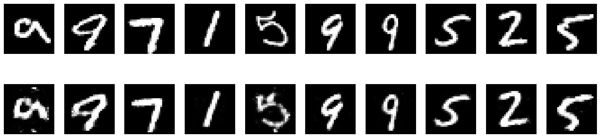
Accessing model layers#
We can also get the output of any layer, including the final layer
layer_encoder = model.get_layer("encoder")
layer_decoder = model.get_layer("decoder")
m = Model(model.input, [layer_decoder.output])
m(X_train)
/usr/local/lib/python3.12/dist-packages/keras/src/models/functional.py:241: UserWarning: The structure of `inputs` doesn't match the expected structure.
Expected: ['input']
Received: inputs=Tensor(shape=(1200, 784))
warnings.warn(msg)
<tf.Tensor: shape=(1200, 784), dtype=float32, numpy=
array([[3.50094751e-07, 1.94241650e-07, 8.59628955e-08, ...,
2.07136850e-07, 8.43215844e-07, 5.10688835e-07],
[3.22270943e-09, 3.45581626e-08, 5.86148352e-10, ...,
1.50969122e-08, 4.10425693e-09, 1.37500294e-07],
[1.91462179e-09, 1.35006601e-08, 2.12271578e-09, ...,
7.72400988e-09, 3.95893807e-09, 1.30482780e-08],
...,
[7.66471749e-06, 9.76466936e-07, 4.00476938e-06, ...,
1.87887999e-05, 8.49053686e-06, 1.12413509e-04],
[1.16530943e-11, 8.82327024e-12, 2.29403063e-12, ...,
7.90878613e-11, 2.99862457e-12, 1.16109684e-10],
[2.22401306e-10, 7.32814753e-10, 7.91984620e-12, ...,
1.50693361e-10, 9.12313627e-11, 4.35173043e-11]], dtype=float32)>
Accessing model weights#
recall that these are the weights adjusted during training
w = model.get_weights()
for i, wi in enumerate(w):
print (f"weights {i}: {str(wi.shape):10s} sum {np.sum(wi):+6.2f}")
weights 0: (784, 50) sum +1032.37
weights 1: (50,) sum +21.02
weights 2: (50, 784) sum -1412.92
weights 3: (784,) sum -181.15
the same weights can also we accessed via the layers
for i, li in enumerate(model.layers):
print ("layer", i, ", ".join([(str(wi.shape)+" sum %+6.2f"%(np.sum(wi.numpy()))) for wi in li.weights]))
layer 0
layer 1 (784, 50) sum +1032.37, (50,) sum +21.02
layer 2 (50, 784) sum -1412.92, (784,) sum -181.15
In this case, we can also get a visual representation of the weights in the same image space as MNIST.
Can you tell if the autoencoder “learnt” something?
TRY: inspect the weights, BEFORE and AFTER training.
def show_img_grid(w):
plt.figure(figsize=(6,6))
for k,wi in enumerate(w):
plt.subplot(10,10,k+1)
plt.imshow(wi.reshape(28,28), cmap=plt.cm.Greys_r)
plt.axis("off")
show_img_grid(model.get_layer("encoder").weights[0].numpy().T)
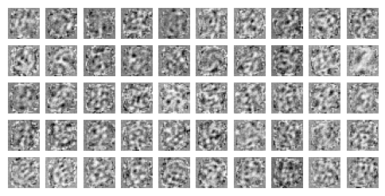
show_img_grid(model.get_layer("decoder").weights[0].numpy())
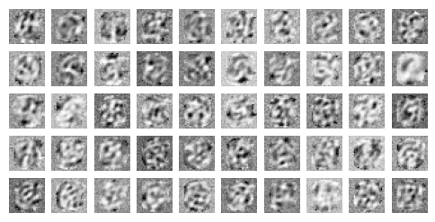
Custom feeding data and extracting intermediate activations#
TF offers different ways to feed in and out of specific layers. The tensorflow.keras.backend offers somewhat more flexiblity.
Observe how we can feed data to our autoencoder and get the activations on the encoder.
layer_input = model.get_layer("input")
layer_encoder = model.get_layer("encoder")
me = Model(model.input, [layer_encoder.output])
me(X_train)
/usr/local/lib/python3.12/dist-packages/keras/src/models/functional.py:241: UserWarning: The structure of `inputs` doesn't match the expected structure.
Expected: ['input']
Received: inputs=Tensor(shape=(1200, 784))
warnings.warn(msg)
<tf.Tensor: shape=(1200, 50), dtype=float32, numpy=
array([[ 3.4944277 , 9.547659 , 8.758875 , ..., 0. ,
6.6768923 , 0. ],
[ 3.0390263 , 8.825412 , 0. , ..., 4.5940933 ,
1.3358723 , 10.0863285 ],
[11.384081 , 7.3678827 , 7.572358 , ..., 4.339612 ,
2.3894663 , 7.526536 ],
...,
[ 7.4959702 , 6.932205 , 0. , ..., 1.8435824 ,
1.9294204 , 4.0417094 ],
[ 6.086721 , 6.47563 , 0.85536695, ..., 8.570728 ,
9.548782 , 13.262166 ],
[ 1.0290082 , 12.900038 , 0. , ..., 2.6830041 ,
2.5218644 , 7.783466 ]], dtype=float32)>
2. inspecting data in latent space (the encoder)#
for one randomly chosen image
img = np.random.permutation(X_test)[:1]
e = me(img).numpy()
e
array([[14.162563 , 8.111314 , 2.5342975 , 5.1879454 , 4.3676615 ,
0. , 9.433677 , 1.9051679 , 4.3265834 , 8.516776 ,
3.7898495 , 1.9780695 , 0. , 14.168376 , 11.846095 ,
0. , 1.249715 , 7.210482 , 12.043379 , 12.735523 ,
10.786911 , 3.7369032 , 13.22298 , 10.142835 , 16.038643 ,
10.149177 , 12.427222 , 9.47407 , 10.0125475 , 9.781037 ,
4.5014334 , 8.754209 , 12.881138 , 8.685972 , 19.292715 ,
12.003199 , 0. , 5.1719694 , 3.366579 , 9.839557 ,
7.8036885 , 5.181303 , 9.068628 , 0.30352163, 5.2075872 ,
8.206926 , 9.621372 , 20.715343 , 1.1775858 , 5.3873854 ]],
dtype=float32)
plt.imshow(img.reshape(28,28), cmap=plt.cm.Greys_r);
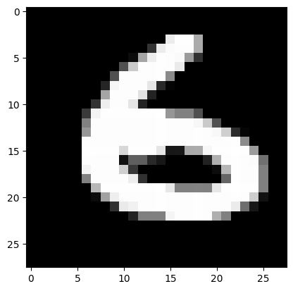
plt.plot(e[0])
plt.xlabel("hidden neuron number")
plt.ylabel("activation (ReLU)")
Text(0, 0.5, 'activation (ReLU)')
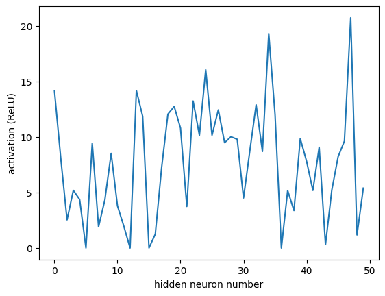
encoder activations#
or more comprehensively for a set of images. Observe we sort the images grouping all images of each class together.
Can you see some activation patterns for different classes?
Is there a most active neuron per class
idxs = np.random.permutation(len(X_test))[:200]
idxs = idxs[np.argsort(y_test[idxs])]
y_sample = y_test[idxs]
X_sample = X_test[idxs]
X_sample_encoded = me([X_sample]).numpy()
print("encoded data size", X_sample_encoded.shape)
plt.figure(figsize=(20,4))
plt.imshow(X_sample_encoded.T, cmap=plt.cm.Greys_r, origin="lower")
plt.colorbar()
plt.ylabel("component")
plt.xlabel("sample class number")
plt.xticks(range(len(y_sample))[::5], y_sample[::5]);
print ("mean activation at encoder %.3f"%np.mean(X_sample_encoded))
encoded data size (200, 50)
mean activation at encoder 5.951
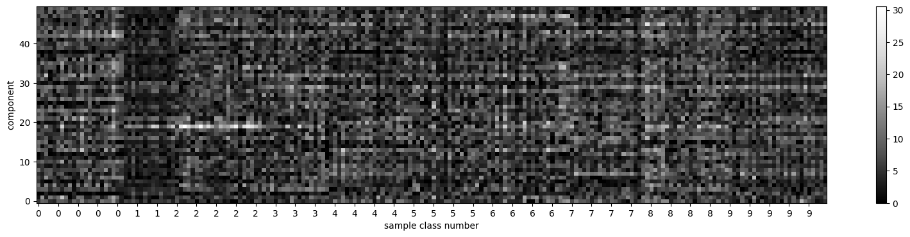
let’s get the average activation of the neurons in the latent space for each class.
Remember however that we trained the network WITHOUT the class information (unsupervised)
e = me(X_test).numpy()
plt.figure(figsize=(20,4))
for i in range(10):
plt.subplot(2,5,i+1)
plt.plot(e[y_test==i].mean(axis=1))
plt.title(f"class {i}")
plt.tight_layout()
/usr/local/lib/python3.12/dist-packages/keras/src/models/functional.py:241: UserWarning: The structure of `inputs` doesn't match the expected structure.
Expected: ['input']
Received: inputs=Tensor(shape=(300, 784))
warnings.warn(msg)
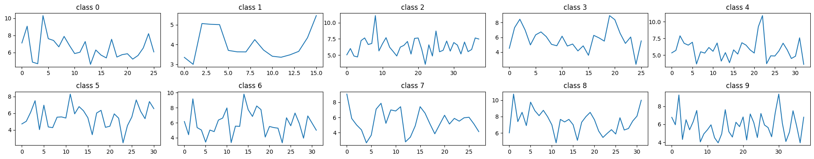
observe distribution of activations at the encoder#
plt.hist(e.flatten(), bins=30);
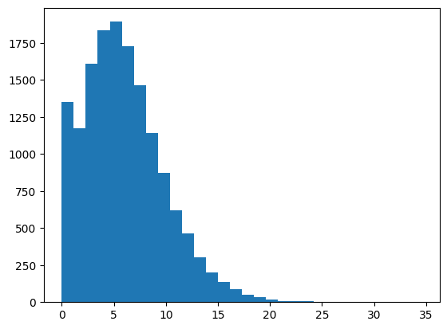
From this we can inspect the neuron activations in our dataset.
for instance, we can get the average activation of the encoder neurons across all inputs
me(X_train).numpy().mean(axis=0)
/usr/local/lib/python3.12/dist-packages/keras/src/models/functional.py:241: UserWarning: The structure of `inputs` doesn't match the expected structure.
Expected: ['input']
Received: inputs=Tensor(shape=(1200, 784))
warnings.warn(msg)
array([ 6.1261086, 6.186819 , 3.7819588, 6.364702 , 5.2674127,
3.6269636, 5.2754307, 6.40878 , 6.16172 , 5.639795 ,
5.6534214, 5.044055 , 5.127783 , 6.9653506, 4.9933968,
4.557195 , 7.2931943, 5.663545 , 6.3618054, 10.097791 ,
6.8231506, 6.439757 , 5.651111 , 5.6049213, 6.286908 ,
5.4456015, 5.520226 , 5.251183 , 6.64647 , 8.671206 ,
3.8040316, 5.932034 , 8.858655 , 5.059597 , 6.378648 ,
5.7320347, 5.328809 , 4.665625 , 4.211729 , 5.445572 ,
5.5631733, 4.5348973, 7.988807 , 7.0627093, 4.071947 ,
7.27021 , 6.3530846, 6.62036 , 4.950751 , 6.0590334],
dtype=float32)
3. Custom loss, unsupervised .fit(X) call \(\rightarrow\) MSE#
given:
\(\mathbf{x}^{(i)} \in \mathbb{R}^{784}\)
\(e(\mathbf{x}^{(i)}) \in \mathbb{R}^{50}\), the encoder
\(d(e(\mathbf{x}^{(i)})) \in \mathbb{R}^{784}\), the decoder
we define the loss function as (MSE):
and implement it by hand, instead of using the prebuilt implementation
import tensorflow as tf
class MSELoss(tf.keras.losses.Loss):
def call(self, a,b):
return tf.reduce_mean( (a-b)**2)
def get_model_U(input_dim, code_size):
inputs = Input(shape=(input_dim,), name="input")
encoder = Dense(code_size, activation='relu', name="encoder")(inputs)
outputs = Dense(input_dim, activation='sigmoid', name="output")(encoder)
model = Model([inputs], [outputs])
model.compile(optimizer='adam', loss=MSELoss())
return model
model = get_model_U(input_dim=X.shape[1], code_size=40)
model.summary()
Model: "functional_26"
┏━━━━━━━━━━━━━━━━━━━━━━━━━━━━━━━━━┳━━━━━━━━━━━━━━━━━━━━━━━━┳━━━━━━━━━━━━━━━┓ ┃ Layer (type) ┃ Output Shape ┃ Param # ┃ ┡━━━━━━━━━━━━━━━━━━━━━━━━━━━━━━━━━╇━━━━━━━━━━━━━━━━━━━━━━━━╇━━━━━━━━━━━━━━━┩ │ input (InputLayer) │ (None, 784) │ 0 │ ├─────────────────────────────────┼────────────────────────┼───────────────┤ │ encoder (Dense) │ (None, 40) │ 31,400 │ ├─────────────────────────────────┼────────────────────────┼───────────────┤ │ output (Dense) │ (None, 784) │ 32,144 │ └─────────────────────────────────┴────────────────────────┴───────────────┘
Total params: 63,544 (248.22 KB)
Trainable params: 63,544 (248.22 KB)
Non-trainable params: 0 (0.00 B)
observe .fit call is now unsupervised (hence, the warning above)
model.fit(X_train, X_train, epochs=100, batch_size=32)
Epoch 1/100
38/38 ━━━━━━━━━━━━━━━━━━━━ 1s 3ms/step - loss: 0.1880
Epoch 2/100
38/38 ━━━━━━━━━━━━━━━━━━━━ 0s 3ms/step - loss: 0.0728
Epoch 3/100
38/38 ━━━━━━━━━━━━━━━━━━━━ 0s 3ms/step - loss: 0.0648
Epoch 4/100
38/38 ━━━━━━━━━━━━━━━━━━━━ 0s 3ms/step - loss: 0.0584
Epoch 5/100
38/38 ━━━━━━━━━━━━━━━━━━━━ 0s 3ms/step - loss: 0.0523
Epoch 6/100
38/38 ━━━━━━━━━━━━━━━━━━━━ 0s 3ms/step - loss: 0.0472
Epoch 7/100
38/38 ━━━━━━━━━━━━━━━━━━━━ 0s 3ms/step - loss: 0.0431
Epoch 8/100
38/38 ━━━━━━━━━━━━━━━━━━━━ 0s 3ms/step - loss: 0.0409
Epoch 9/100
38/38 ━━━━━━━━━━━━━━━━━━━━ 0s 3ms/step - loss: 0.0390
Epoch 10/100
38/38 ━━━━━━━━━━━━━━━━━━━━ 0s 3ms/step - loss: 0.0364
Epoch 11/100
38/38 ━━━━━━━━━━━━━━━━━━━━ 0s 3ms/step - loss: 0.0350
Epoch 12/100
38/38 ━━━━━━━━━━━━━━━━━━━━ 0s 3ms/step - loss: 0.0333
Epoch 13/100
38/38 ━━━━━━━━━━━━━━━━━━━━ 0s 3ms/step - loss: 0.0320
Epoch 14/100
38/38 ━━━━━━━━━━━━━━━━━━━━ 0s 3ms/step - loss: 0.0309
Epoch 15/100
38/38 ━━━━━━━━━━━━━━━━━━━━ 0s 3ms/step - loss: 0.0296
Epoch 16/100
38/38 ━━━━━━━━━━━━━━━━━━━━ 0s 3ms/step - loss: 0.0285
Epoch 17/100
38/38 ━━━━━━━━━━━━━━━━━━━━ 0s 3ms/step - loss: 0.0267
Epoch 18/100
38/38 ━━━━━━━━━━━━━━━━━━━━ 0s 3ms/step - loss: 0.0264
Epoch 19/100
38/38 ━━━━━━━━━━━━━━━━━━━━ 0s 3ms/step - loss: 0.0253
Epoch 20/100
38/38 ━━━━━━━━━━━━━━━━━━━━ 0s 3ms/step - loss: 0.0246
Epoch 21/100
38/38 ━━━━━━━━━━━━━━━━━━━━ 0s 3ms/step - loss: 0.0238
Epoch 22/100
38/38 ━━━━━━━━━━━━━━━━━━━━ 0s 3ms/step - loss: 0.0224
Epoch 23/100
38/38 ━━━━━━━━━━━━━━━━━━━━ 0s 3ms/step - loss: 0.0222
Epoch 24/100
38/38 ━━━━━━━━━━━━━━━━━━━━ 0s 3ms/step - loss: 0.0215
Epoch 25/100
38/38 ━━━━━━━━━━━━━━━━━━━━ 0s 3ms/step - loss: 0.0207
Epoch 26/100
38/38 ━━━━━━━━━━━━━━━━━━━━ 0s 3ms/step - loss: 0.0200
Epoch 27/100
38/38 ━━━━━━━━━━━━━━━━━━━━ 0s 3ms/step - loss: 0.0197
Epoch 28/100
38/38 ━━━━━━━━━━━━━━━━━━━━ 0s 3ms/step - loss: 0.0190
Epoch 29/100
38/38 ━━━━━━━━━━━━━━━━━━━━ 0s 3ms/step - loss: 0.0185
Epoch 30/100
38/38 ━━━━━━━━━━━━━━━━━━━━ 0s 3ms/step - loss: 0.0179
Epoch 31/100
38/38 ━━━━━━━━━━━━━━━━━━━━ 0s 3ms/step - loss: 0.0174
Epoch 32/100
38/38 ━━━━━━━━━━━━━━━━━━━━ 0s 3ms/step - loss: 0.0174
Epoch 33/100
38/38 ━━━━━━━━━━━━━━━━━━━━ 0s 3ms/step - loss: 0.0169
Epoch 34/100
38/38 ━━━━━━━━━━━━━━━━━━━━ 0s 3ms/step - loss: 0.0163
Epoch 35/100
38/38 ━━━━━━━━━━━━━━━━━━━━ 0s 3ms/step - loss: 0.0160
Epoch 36/100
38/38 ━━━━━━━━━━━━━━━━━━━━ 0s 3ms/step - loss: 0.0156
Epoch 37/100
38/38 ━━━━━━━━━━━━━━━━━━━━ 0s 3ms/step - loss: 0.0152
Epoch 38/100
38/38 ━━━━━━━━━━━━━━━━━━━━ 0s 3ms/step - loss: 0.0148
Epoch 39/100
38/38 ━━━━━━━━━━━━━━━━━━━━ 0s 3ms/step - loss: 0.0145
Epoch 40/100
38/38 ━━━━━━━━━━━━━━━━━━━━ 0s 3ms/step - loss: 0.0142
Epoch 41/100
38/38 ━━━━━━━━━━━━━━━━━━━━ 0s 3ms/step - loss: 0.0136
Epoch 42/100
38/38 ━━━━━━━━━━━━━━━━━━━━ 0s 3ms/step - loss: 0.0137
Epoch 43/100
38/38 ━━━━━━━━━━━━━━━━━━━━ 0s 3ms/step - loss: 0.0135
Epoch 44/100
38/38 ━━━━━━━━━━━━━━━━━━━━ 0s 3ms/step - loss: 0.0129
Epoch 45/100
38/38 ━━━━━━━━━━━━━━━━━━━━ 0s 3ms/step - loss: 0.0132
Epoch 46/100
38/38 ━━━━━━━━━━━━━━━━━━━━ 0s 3ms/step - loss: 0.0125
Epoch 47/100
38/38 ━━━━━━━━━━━━━━━━━━━━ 0s 3ms/step - loss: 0.0125
Epoch 48/100
38/38 ━━━━━━━━━━━━━━━━━━━━ 0s 3ms/step - loss: 0.0120
Epoch 49/100
38/38 ━━━━━━━━━━━━━━━━━━━━ 0s 3ms/step - loss: 0.0120
Epoch 50/100
38/38 ━━━━━━━━━━━━━━━━━━━━ 0s 3ms/step - loss: 0.0117
Epoch 51/100
38/38 ━━━━━━━━━━━━━━━━━━━━ 0s 3ms/step - loss: 0.0116
Epoch 52/100
38/38 ━━━━━━━━━━━━━━━━━━━━ 0s 4ms/step - loss: 0.0113
Epoch 53/100
38/38 ━━━━━━━━━━━━━━━━━━━━ 0s 5ms/step - loss: 0.0113
Epoch 54/100
38/38 ━━━━━━━━━━━━━━━━━━━━ 0s 5ms/step - loss: 0.0110
Epoch 55/100
38/38 ━━━━━━━━━━━━━━━━━━━━ 0s 4ms/step - loss: 0.0109
Epoch 56/100
38/38 ━━━━━━━━━━━━━━━━━━━━ 0s 5ms/step - loss: 0.0105
Epoch 57/100
38/38 ━━━━━━━━━━━━━━━━━━━━ 0s 5ms/step - loss: 0.0107
Epoch 58/100
38/38 ━━━━━━━━━━━━━━━━━━━━ 0s 6ms/step - loss: 0.0107
Epoch 59/100
38/38 ━━━━━━━━━━━━━━━━━━━━ 0s 8ms/step - loss: 0.0103
Epoch 60/100
38/38 ━━━━━━━━━━━━━━━━━━━━ 1s 7ms/step - loss: 0.0103
Epoch 61/100
38/38 ━━━━━━━━━━━━━━━━━━━━ 0s 3ms/step - loss: 0.0101
Epoch 62/100
38/38 ━━━━━━━━━━━━━━━━━━━━ 0s 3ms/step - loss: 0.0098
Epoch 63/100
38/38 ━━━━━━━━━━━━━━━━━━━━ 0s 3ms/step - loss: 0.0095
Epoch 64/100
38/38 ━━━━━━━━━━━━━━━━━━━━ 0s 3ms/step - loss: 0.0095
Epoch 65/100
38/38 ━━━━━━━━━━━━━━━━━━━━ 0s 3ms/step - loss: 0.0095
Epoch 66/100
38/38 ━━━━━━━━━━━━━━━━━━━━ 0s 3ms/step - loss: 0.0094
Epoch 67/100
38/38 ━━━━━━━━━━━━━━━━━━━━ 0s 3ms/step - loss: 0.0091
Epoch 68/100
38/38 ━━━━━━━━━━━━━━━━━━━━ 0s 3ms/step - loss: 0.0092
Epoch 69/100
38/38 ━━━━━━━━━━━━━━━━━━━━ 0s 3ms/step - loss: 0.0092
Epoch 70/100
38/38 ━━━━━━━━━━━━━━━━━━━━ 0s 3ms/step - loss: 0.0089
Epoch 71/100
38/38 ━━━━━━━━━━━━━━━━━━━━ 0s 3ms/step - loss: 0.0092
Epoch 72/100
38/38 ━━━━━━━━━━━━━━━━━━━━ 0s 3ms/step - loss: 0.0089
Epoch 73/100
38/38 ━━━━━━━━━━━━━━━━━━━━ 0s 3ms/step - loss: 0.0085
Epoch 74/100
38/38 ━━━━━━━━━━━━━━━━━━━━ 0s 3ms/step - loss: 0.0086
Epoch 75/100
38/38 ━━━━━━━━━━━━━━━━━━━━ 0s 3ms/step - loss: 0.0083
Epoch 76/100
38/38 ━━━━━━━━━━━━━━━━━━━━ 0s 3ms/step - loss: 0.0086
Epoch 77/100
38/38 ━━━━━━━━━━━━━━━━━━━━ 0s 3ms/step - loss: 0.0083
Epoch 78/100
38/38 ━━━━━━━━━━━━━━━━━━━━ 0s 3ms/step - loss: 0.0085
Epoch 79/100
38/38 ━━━━━━━━━━━━━━━━━━━━ 0s 3ms/step - loss: 0.0083
Epoch 80/100
38/38 ━━━━━━━━━━━━━━━━━━━━ 0s 3ms/step - loss: 0.0084
Epoch 81/100
38/38 ━━━━━━━━━━━━━━━━━━━━ 0s 3ms/step - loss: 0.0083
Epoch 82/100
38/38 ━━━━━━━━━━━━━━━━━━━━ 0s 3ms/step - loss: 0.0081
Epoch 83/100
38/38 ━━━━━━━━━━━━━━━━━━━━ 0s 3ms/step - loss: 0.0080
Epoch 84/100
38/38 ━━━━━━━━━━━━━━━━━━━━ 0s 3ms/step - loss: 0.0080
Epoch 85/100
38/38 ━━━━━━━━━━━━━━━━━━━━ 0s 3ms/step - loss: 0.0079
Epoch 86/100
38/38 ━━━━━━━━━━━━━━━━━━━━ 0s 3ms/step - loss: 0.0078
Epoch 87/100
38/38 ━━━━━━━━━━━━━━━━━━━━ 0s 3ms/step - loss: 0.0078
Epoch 88/100
38/38 ━━━━━━━━━━━━━━━━━━━━ 0s 3ms/step - loss: 0.0079
Epoch 89/100
38/38 ━━━━━━━━━━━━━━━━━━━━ 0s 3ms/step - loss: 0.0078
Epoch 90/100
38/38 ━━━━━━━━━━━━━━━━━━━━ 0s 3ms/step - loss: 0.0075
Epoch 91/100
38/38 ━━━━━━━━━━━━━━━━━━━━ 0s 3ms/step - loss: 0.0077
Epoch 92/100
38/38 ━━━━━━━━━━━━━━━━━━━━ 0s 3ms/step - loss: 0.0075
Epoch 93/100
38/38 ━━━━━━━━━━━━━━━━━━━━ 0s 4ms/step - loss: 0.0074
Epoch 94/100
38/38 ━━━━━━━━━━━━━━━━━━━━ 0s 3ms/step - loss: 0.0075
Epoch 95/100
38/38 ━━━━━━━━━━━━━━━━━━━━ 0s 3ms/step - loss: 0.0074
Epoch 96/100
38/38 ━━━━━━━━━━━━━━━━━━━━ 0s 3ms/step - loss: 0.0073
Epoch 97/100
38/38 ━━━━━━━━━━━━━━━━━━━━ 0s 3ms/step - loss: 0.0073
Epoch 98/100
38/38 ━━━━━━━━━━━━━━━━━━━━ 0s 3ms/step - loss: 0.0073
Epoch 99/100
38/38 ━━━━━━━━━━━━━━━━━━━━ 0s 3ms/step - loss: 0.0072
Epoch 100/100
38/38 ━━━━━━━━━━━━━━━━━━━━ 0s 3ms/step - loss: 0.0072
<keras.src.callbacks.history.History at 0x785c086c7260>
X_sample = np.random.permutation(X_test)[:10]
X_pred = model.predict(X_sample)
plt.figure(figsize=(20,5))
for i in range(len(X_sample)):
plt.subplot(2,len(X_sample),i+1)
plt.imshow(X_sample[i].reshape(28,28), cmap=plt.cm.Greys_r)
plt.axis("off")
plt.subplot(2,len(X_sample),len(X_sample)+i+1)
plt.imshow(X_pred[i].reshape(28,28), cmap=plt.cm.Greys_r)
plt.axis("off")
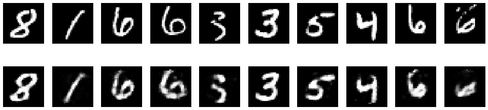
4. Autoencoder for image denoising#
observe reconstruction when fed with noisy data
def add_noise(x, noise_level=.2):
return x + np.random.normal(size=x.shape)*noise_level
X_sample = np.random.permutation(X_test)[:10]
X_pred = model.predict(X_sample)
X_sample_noisy = add_noise(X_sample)
X_pred_noisy = model.predict(X_sample_noisy)
1/1 ━━━━━━━━━━━━━━━━━━━━ 0s 68ms/step
1/1 ━━━━━━━━━━━━━━━━━━━━ 0s 39ms/step
plt.figure(figsize=(20,5))
for i in range(len(X_sample_noisy)):
plt.subplot(2,len(X_sample_noisy),i+1)
plt.imshow(X_sample_noisy[i].reshape(28,28), cmap=plt.cm.Greys_r)
plt.axis("off")
plt.subplot(2,len(X_sample_noisy),len(X_sample_noisy)+i+1)
plt.imshow(X_pred_noisy[i].reshape(28,28), cmap=plt.cm.Greys_r)
plt.axis("off")
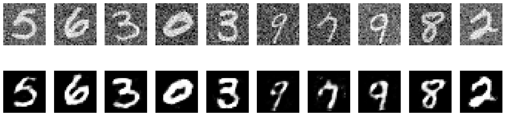
in a more real scenario we only have noisy data to train the model#
n_model = get_model(input_dim=X.shape[1], code_size=40)
X_train_noisy = add_noise(X_train)
n_model.fit(X_train_noisy, X_train_noisy, epochs=100, batch_size=32)
Epoch 1/100
38/38 ━━━━━━━━━━━━━━━━━━━━ 1s 3ms/step - loss: 0.2293
Epoch 2/100
38/38 ━━━━━━━━━━━━━━━━━━━━ 0s 3ms/step - loss: 0.1116
Epoch 3/100
38/38 ━━━━━━━━━━━━━━━━━━━━ 0s 3ms/step - loss: 0.1055
Epoch 4/100
38/38 ━━━━━━━━━━━━━━━━━━━━ 0s 3ms/step - loss: 0.0979
Epoch 5/100
38/38 ━━━━━━━━━━━━━━━━━━━━ 0s 3ms/step - loss: 0.0924
Epoch 6/100
38/38 ━━━━━━━━━━━━━━━━━━━━ 0s 3ms/step - loss: 0.0875
Epoch 7/100
38/38 ━━━━━━━━━━━━━━━━━━━━ 0s 3ms/step - loss: 0.0831
Epoch 8/100
38/38 ━━━━━━━━━━━━━━━━━━━━ 0s 3ms/step - loss: 0.0810
Epoch 9/100
38/38 ━━━━━━━━━━━━━━━━━━━━ 0s 3ms/step - loss: 0.0780
Epoch 10/100
38/38 ━━━━━━━━━━━━━━━━━━━━ 0s 4ms/step - loss: 0.0763
Epoch 11/100
38/38 ━━━━━━━━━━━━━━━━━━━━ 0s 3ms/step - loss: 0.0747
Epoch 12/100
38/38 ━━━━━━━━━━━━━━━━━━━━ 0s 3ms/step - loss: 0.0734
Epoch 13/100
38/38 ━━━━━━━━━━━━━━━━━━━━ 0s 3ms/step - loss: 0.0720
Epoch 14/100
38/38 ━━━━━━━━━━━━━━━━━━━━ 0s 3ms/step - loss: 0.0711
Epoch 15/100
38/38 ━━━━━━━━━━━━━━━━━━━━ 0s 3ms/step - loss: 0.0683
Epoch 16/100
38/38 ━━━━━━━━━━━━━━━━━━━━ 0s 3ms/step - loss: 0.0674
Epoch 17/100
38/38 ━━━━━━━━━━━━━━━━━━━━ 0s 3ms/step - loss: 0.0658
Epoch 18/100
38/38 ━━━━━━━━━━━━━━━━━━━━ 0s 3ms/step - loss: 0.0649
Epoch 19/100
38/38 ━━━━━━━━━━━━━━━━━━━━ 0s 3ms/step - loss: 0.0639
Epoch 20/100
38/38 ━━━━━━━━━━━━━━━━━━━━ 0s 3ms/step - loss: 0.0627
Epoch 21/100
38/38 ━━━━━━━━━━━━━━━━━━━━ 0s 3ms/step - loss: 0.0618
Epoch 22/100
38/38 ━━━━━━━━━━━━━━━━━━━━ 0s 3ms/step - loss: 0.0613
Epoch 23/100
38/38 ━━━━━━━━━━━━━━━━━━━━ 0s 3ms/step - loss: 0.0605
Epoch 24/100
38/38 ━━━━━━━━━━━━━━━━━━━━ 0s 3ms/step - loss: 0.0595
Epoch 25/100
38/38 ━━━━━━━━━━━━━━━━━━━━ 0s 3ms/step - loss: 0.0587
Epoch 26/100
38/38 ━━━━━━━━━━━━━━━━━━━━ 0s 3ms/step - loss: 0.0584
Epoch 27/100
38/38 ━━━━━━━━━━━━━━━━━━━━ 0s 3ms/step - loss: 0.0572
Epoch 28/100
38/38 ━━━━━━━━━━━━━━━━━━━━ 0s 3ms/step - loss: 0.0569
Epoch 29/100
38/38 ━━━━━━━━━━━━━━━━━━━━ 0s 3ms/step - loss: 0.0562
Epoch 30/100
38/38 ━━━━━━━━━━━━━━━━━━━━ 0s 3ms/step - loss: 0.0553
Epoch 31/100
38/38 ━━━━━━━━━━━━━━━━━━━━ 0s 3ms/step - loss: 0.0552
Epoch 32/100
38/38 ━━━━━━━━━━━━━━━━━━━━ 0s 3ms/step - loss: 0.0544
Epoch 33/100
38/38 ━━━━━━━━━━━━━━━━━━━━ 0s 3ms/step - loss: 0.0537
Epoch 34/100
38/38 ━━━━━━━━━━━━━━━━━━━━ 0s 3ms/step - loss: 0.0538
Epoch 35/100
38/38 ━━━━━━━━━━━━━━━━━━━━ 0s 3ms/step - loss: 0.0533
Epoch 36/100
38/38 ━━━━━━━━━━━━━━━━━━━━ 0s 4ms/step - loss: 0.0528
Epoch 37/100
38/38 ━━━━━━━━━━━━━━━━━━━━ 0s 5ms/step - loss: 0.0525
Epoch 38/100
38/38 ━━━━━━━━━━━━━━━━━━━━ 0s 5ms/step - loss: 0.0520
Epoch 39/100
38/38 ━━━━━━━━━━━━━━━━━━━━ 0s 5ms/step - loss: 0.0517
Epoch 40/100
38/38 ━━━━━━━━━━━━━━━━━━━━ 0s 4ms/step - loss: 0.0514
Epoch 41/100
38/38 ━━━━━━━━━━━━━━━━━━━━ 0s 6ms/step - loss: 0.0512
Epoch 42/100
38/38 ━━━━━━━━━━━━━━━━━━━━ 0s 6ms/step - loss: 0.0511
Epoch 43/100
38/38 ━━━━━━━━━━━━━━━━━━━━ 0s 5ms/step - loss: 0.0507
Epoch 44/100
38/38 ━━━━━━━━━━━━━━━━━━━━ 0s 4ms/step - loss: 0.0503
Epoch 45/100
38/38 ━━━━━━━━━━━━━━━━━━━━ 0s 3ms/step - loss: 0.0503
Epoch 46/100
38/38 ━━━━━━━━━━━━━━━━━━━━ 0s 3ms/step - loss: 0.0500
Epoch 47/100
38/38 ━━━━━━━━━━━━━━━━━━━━ 0s 3ms/step - loss: 0.0496
Epoch 48/100
38/38 ━━━━━━━━━━━━━━━━━━━━ 0s 3ms/step - loss: 0.0493
Epoch 49/100
38/38 ━━━━━━━━━━━━━━━━━━━━ 0s 3ms/step - loss: 0.0493
Epoch 50/100
38/38 ━━━━━━━━━━━━━━━━━━━━ 0s 4ms/step - loss: 0.0491
Epoch 51/100
38/38 ━━━━━━━━━━━━━━━━━━━━ 0s 3ms/step - loss: 0.0487
Epoch 52/100
38/38 ━━━━━━━━━━━━━━━━━━━━ 0s 3ms/step - loss: 0.0484
Epoch 53/100
38/38 ━━━━━━━━━━━━━━━━━━━━ 0s 3ms/step - loss: 0.0483
Epoch 54/100
38/38 ━━━━━━━━━━━━━━━━━━━━ 0s 4ms/step - loss: 0.0482
Epoch 55/100
38/38 ━━━━━━━━━━━━━━━━━━━━ 0s 3ms/step - loss: 0.0481
Epoch 56/100
38/38 ━━━━━━━━━━━━━━━━━━━━ 0s 3ms/step - loss: 0.0480
Epoch 57/100
38/38 ━━━━━━━━━━━━━━━━━━━━ 0s 4ms/step - loss: 0.0479
Epoch 58/100
38/38 ━━━━━━━━━━━━━━━━━━━━ 0s 4ms/step - loss: 0.0476
Epoch 59/100
38/38 ━━━━━━━━━━━━━━━━━━━━ 0s 4ms/step - loss: 0.0476
Epoch 60/100
38/38 ━━━━━━━━━━━━━━━━━━━━ 0s 4ms/step - loss: 0.0475
Epoch 61/100
38/38 ━━━━━━━━━━━━━━━━━━━━ 0s 3ms/step - loss: 0.0473
Epoch 62/100
38/38 ━━━━━━━━━━━━━━━━━━━━ 0s 4ms/step - loss: 0.0473
Epoch 63/100
38/38 ━━━━━━━━━━━━━━━━━━━━ 0s 3ms/step - loss: 0.0470
Epoch 64/100
38/38 ━━━━━━━━━━━━━━━━━━━━ 0s 3ms/step - loss: 0.0469
Epoch 65/100
38/38 ━━━━━━━━━━━━━━━━━━━━ 0s 3ms/step - loss: 0.0468
Epoch 66/100
38/38 ━━━━━━━━━━━━━━━━━━━━ 0s 3ms/step - loss: 0.0467
Epoch 67/100
38/38 ━━━━━━━━━━━━━━━━━━━━ 0s 4ms/step - loss: 0.0466
Epoch 68/100
38/38 ━━━━━━━━━━━━━━━━━━━━ 0s 3ms/step - loss: 0.0465
Epoch 69/100
38/38 ━━━━━━━━━━━━━━━━━━━━ 0s 3ms/step - loss: 0.0464
Epoch 70/100
38/38 ━━━━━━━━━━━━━━━━━━━━ 0s 3ms/step - loss: 0.0461
Epoch 71/100
38/38 ━━━━━━━━━━━━━━━━━━━━ 0s 3ms/step - loss: 0.0462
Epoch 72/100
38/38 ━━━━━━━━━━━━━━━━━━━━ 0s 3ms/step - loss: 0.0461
Epoch 73/100
38/38 ━━━━━━━━━━━━━━━━━━━━ 0s 4ms/step - loss: 0.0459
Epoch 74/100
38/38 ━━━━━━━━━━━━━━━━━━━━ 0s 3ms/step - loss: 0.0461
Epoch 75/100
38/38 ━━━━━━━━━━━━━━━━━━━━ 0s 3ms/step - loss: 0.0459
Epoch 76/100
38/38 ━━━━━━━━━━━━━━━━━━━━ 0s 3ms/step - loss: 0.0460
Epoch 77/100
38/38 ━━━━━━━━━━━━━━━━━━━━ 0s 3ms/step - loss: 0.0456
Epoch 78/100
38/38 ━━━━━━━━━━━━━━━━━━━━ 0s 3ms/step - loss: 0.0456
Epoch 79/100
38/38 ━━━━━━━━━━━━━━━━━━━━ 0s 4ms/step - loss: 0.0455
Epoch 80/100
38/38 ━━━━━━━━━━━━━━━━━━━━ 0s 3ms/step - loss: 0.0456
Epoch 81/100
38/38 ━━━━━━━━━━━━━━━━━━━━ 0s 3ms/step - loss: 0.0453
Epoch 82/100
38/38 ━━━━━━━━━━━━━━━━━━━━ 0s 3ms/step - loss: 0.0452
Epoch 83/100
38/38 ━━━━━━━━━━━━━━━━━━━━ 0s 4ms/step - loss: 0.0452
Epoch 84/100
38/38 ━━━━━━━━━━━━━━━━━━━━ 0s 3ms/step - loss: 0.0454
Epoch 85/100
38/38 ━━━━━━━━━━━━━━━━━━━━ 0s 3ms/step - loss: 0.0453
Epoch 86/100
38/38 ━━━━━━━━━━━━━━━━━━━━ 0s 3ms/step - loss: 0.0450
Epoch 87/100
38/38 ━━━━━━━━━━━━━━━━━━━━ 0s 3ms/step - loss: 0.0450
Epoch 88/100
38/38 ━━━━━━━━━━━━━━━━━━━━ 0s 4ms/step - loss: 0.0450
Epoch 89/100
38/38 ━━━━━━━━━━━━━━━━━━━━ 0s 3ms/step - loss: 0.0450
Epoch 90/100
38/38 ━━━━━━━━━━━━━━━━━━━━ 0s 3ms/step - loss: 0.0448
Epoch 91/100
38/38 ━━━━━━━━━━━━━━━━━━━━ 0s 5ms/step - loss: 0.0447
Epoch 92/100
38/38 ━━━━━━━━━━━━━━━━━━━━ 0s 5ms/step - loss: 0.0447
Epoch 93/100
38/38 ━━━━━━━━━━━━━━━━━━━━ 0s 4ms/step - loss: 0.0448
Epoch 94/100
38/38 ━━━━━━━━━━━━━━━━━━━━ 0s 5ms/step - loss: 0.0448
Epoch 95/100
38/38 ━━━━━━━━━━━━━━━━━━━━ 0s 5ms/step - loss: 0.0447
Epoch 96/100
38/38 ━━━━━━━━━━━━━━━━━━━━ 0s 6ms/step - loss: 0.0445
Epoch 97/100
38/38 ━━━━━━━━━━━━━━━━━━━━ 0s 6ms/step - loss: 0.0446
Epoch 98/100
38/38 ━━━━━━━━━━━━━━━━━━━━ 0s 5ms/step - loss: 0.0446
Epoch 99/100
38/38 ━━━━━━━━━━━━━━━━━━━━ 0s 5ms/step - loss: 0.0445
Epoch 100/100
38/38 ━━━━━━━━━━━━━━━━━━━━ 0s 5ms/step - loss: 0.0444
<keras.src.callbacks.history.History at 0x785c0873bec0>
X_sample_noisy = add_noise(X_sample)
X_pred_noisy = n_model.predict(X_sample_noisy)
plt.figure(figsize=(20,5))
for i in range(len(X_sample_noisy)):
plt.subplot(2,len(X_sample_noisy),i+1)
plt.imshow(X_sample_noisy[i].reshape(28,28), cmap=plt.cm.Greys_r)
plt.axis("off")
plt.subplot(2,len(X_sample_noisy),len(X_sample_noisy)+i+1)
plt.imshow(X_pred_noisy[i].reshape(28,28), cmap=plt.cm.Greys_r)
plt.axis("off")
1/1 ━━━━━━━━━━━━━━━━━━━━ 0s 71ms/step
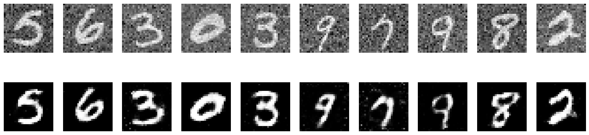